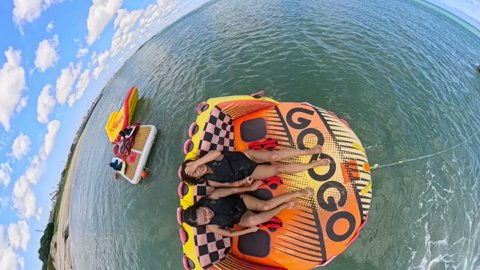
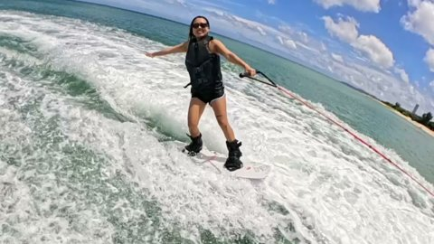
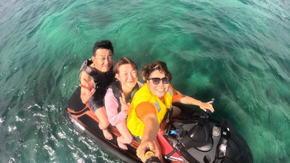
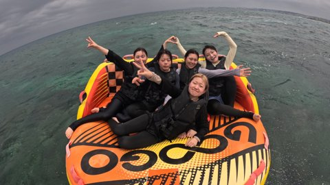
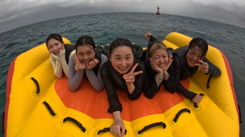
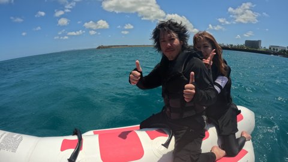
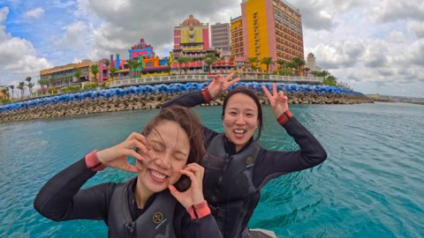
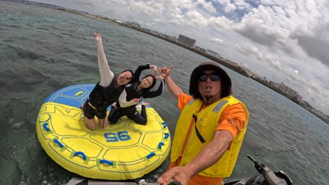
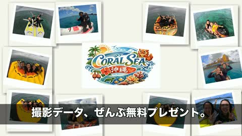

AI動画 構成案B+A ハイブリッド版 — 絵コンテ・素材リスト・競合分析
沖縄観光検討層に CORAL SEA を認知させるための広告クリエイティブ。
主要競合各社の訴求・価格・撮影サービスを調査。「GoPro撮影データ完全無料」は明確な差別化ポイントであることが判明。
| ショップ名 / リンク | 主訴求 | 価格帯 | 撮影サービス | 動画 / SNS |
|---|---|---|---|---|
| CORAL SEA（自社） mlomarine.com ／ Instagram |
陽気なスタッフ／ 多彩なメニュー |
¥4,000〜 ¥20,000 |
完全無料 GoProデータ |
動画未着手（今回新規） |
| COCO MARINE（宜野湾・直接競合） 公式サイト ／ Instagram |
「この夏最高の思い出」 家族連れ・初心者対応 |
非公開 | 記載なし | HP動画あり 抒情的・ドローン多用 |
| アクアマリン沖縄 ▶ YouTubeチャンネル |
「オリジナルボート」 インスタ映え |
¥7,000〜 ¥14,500 |
360°カメラ写真 無料 |
YouTube公式チャンネル運営 映え狙いショート動画多数 |
| Only One Marine（同業比較対象） ▶ YouTube PR動画 |
フライボード単独訴求 | 非公開 | 不明 | 1分尺のPR動画 BGM＋アクション連発型 |
| マリンアイランド 公式サイト ／ 予約ページ |
「14種類遊び放題」 「県内最多級」 |
遊び放題プラン | 有料オプション | 多彩さ訴求 15年運営の老舗 |
✨ v5 アップデート： CUT5 = Skydive Nipponスタイル ポラロイドコラージュ（中央ロゴ＋お客さま体験10枚） / CUT6 = 実写海背景＋CORAL SEAロゴ＋電話番号CTA









下記カテゴリから絵コンテに合う素材を抽出します（営業＋クライアントで選定）。
@coralsea_okinawa を開く※ Instagram投稿のうち、解像度・画質が広告転用に耐えるもの（縦2160px以上）を優先選定します。
| CUT | 素材内容 | 形式・解像度 | 調達 |
|---|---|---|---|
| CUT 1 | 青い沖縄の海・空撮ロングショット 必須 | MP4 4K or 4K写真 | Instagram or AI生成補完 |
| CUT 2 | フライボード打ち上げ動画 必須 | MP4 1080p以上 | クライアント素材 |
| CUT 3 | ホバーボード／ウェイクボード走行中 必須 | MP4 1080p以上 | クライアント素材 |
| CUT 4 | シュノーケル水中映像（魚・サンゴ・光） 必須 | MP4 1080p以上 | クライアント素材 / Instagram |
| CUT 5 | 子ども・家族・カップルの体験笑顔（3カット必要） 必須 | MP4 or 写真 | クライアント素材 |
| CUT 6 | スタッフ集合 or ハイタッチ笑顔 必須 | MP4 or 写真 | クライアント素材 |
| CUT 7 | GoPro撮影データ受け渡しシーン 必須 差別化 | MP4 | ★要追加撮影の可能性大 |
| CUT 8 | CORAL SEA ロゴデータ 必須 | AI / SVG / PNG透過 | クライアント支給 |
| CUT 8 | HP予約QR / 電話 / 3店舗住所 必須 | テキスト | HP掲載情報 |
| CUT | 素材内容 | 形式・解像度 | 備考 |
|---|---|---|---|
| CUT 1 | ドローン空撮（沖縄ビーチを上空から） 理想 | MP4 4K | なければAIで補完可能 |
| CUT 2 | フライボード超スロー（240fps以上） 理想 | MP4 | スローで尺が伸ばせる |
| CUT 5 | 子どもの初回成功ガッツポーズ 理想 | MP4 | 感情ピークのカット |
| CUT 6 | 個別スタッフのポートレート笑顔（複数） 理想 | JPG / MP4 | 個性訴求に活用 |
| CUT 7 | GoPro実映像のサンプル（チラ見せ用） 理想 | MP4 | 「こんな映像が貰える」を見せる |
| 素材入手時間 | ヒアリングシート備考に「素材を用意するのに多少時間が掛かる可能性」あり。スケジュールは余裕を持って組む。 |
| CUT 7 追加撮影 | 「GoPro受け渡しシーン」は撮影されていない可能性高い。クライアントへ追加撮影 or 演出依頼が必要。最大の差別化要素のため絶対外せない。 |
| 肖像権 | お客さま映り込み素材は使用前に書面許諾必須。特にCUT 5（子ども）は要注意。 |
| Instagram転用 | 公式Instagram (@coralsea_okinawa) からのピックアップは利用OKだが、お客さま映り込み投稿は要再確認。 |
| 不足素材 | 取得不可な素材はAI生成（Veo/Gemini）で補完。ただし「実在のお客さま」「特定スタッフ」は生成NG。 |